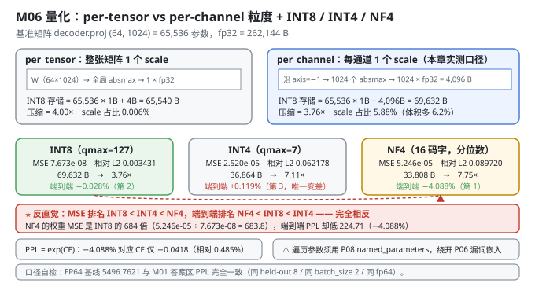
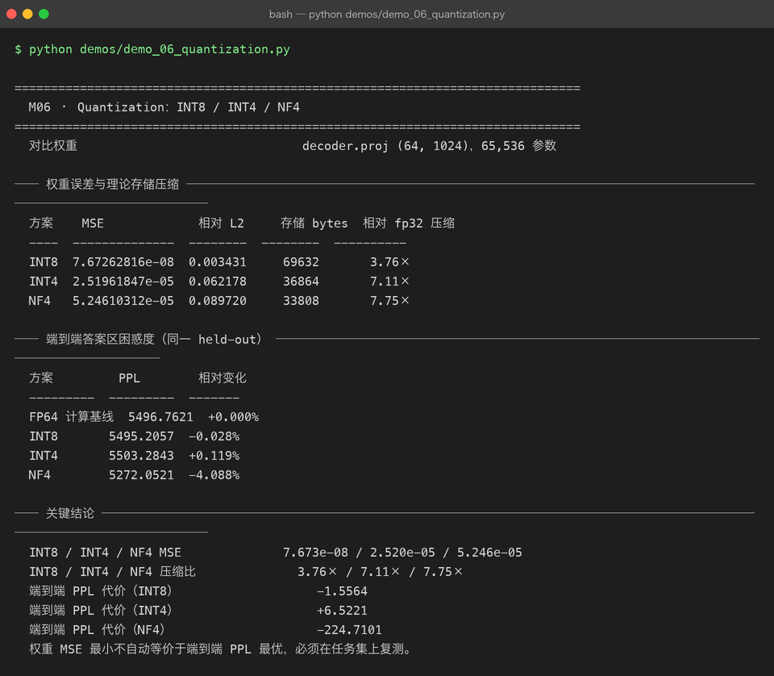

Milestone 06 — Quantization：INT8 / INT4 / NF4
M05 证明了"训练过的模型比基座好"（10/0/0 稳定）。现在进入后半段主线的第一站：模型太大，跑不起怎么办？
P08 的 QLoRA 已经用过 NF4（把冻结的基座压成 4 bit 以省显存）。本章的问题更一般：对任意一张权重矩阵，INT8 / INT4 / NF4 各自要付多少代价？
答案是两条，而且它们互相矛盾：
- 按权重重建误差排：INT8 ≫ INT4 > NF4（INT8 最好）。
- 按端到端困惑度排：NF4 ≫ INT8 > INT4（NF4 最好）。
权重误差最小的方案，端到端不是最好的。 这是本章最值得记住的一件事，也是整个 P09 里最有价值的一条实测发现。
纯 numpy 手写：对称量化、per-channel scale、NF4 码本复用 P08、存储账本、端到端量化，全部自己实现（src/ie/quantize.py）。没有 bitsandbytes、没有 GPTQ。
1. Why：为什么量化必然有代价，以及代价怎么衡量
量化的本质是用 bits 个离散码字 + 一个 scale 去表示一片浮点数：
Ŵ = scale × round(W / scale) # 对称量化（INT8 / INT4）代价是 W − Ŵ。衡量它有两种完全不同的口径：
| 口径 | 指标 | 衡量什么 |
|---|---|---|
| 重建误差 | MSE / 相对 L2 | 权重矩阵本身被改了多少 |
| 任务代价 | 端到端 PPL | 这个改动让模型变笨了多少 |
直觉是两者正相关，实测不是。 原因有三条，按重要性排：
- 量化误差不是白噪声，是结构化噪声。 它与权重的幅度、分布、离群值位置相关。MSE 只算"总量"，不算"方向" —— 一个沿着"输出不敏感方向"的大误差，可能比一个沿着敏感方向的小误差更无害。
- 网络的各层对扰动的敏感度差异极大。 同一个 MSE，压在
attn.Wq上和压在ffn.W2上，后果完全不同。 - PPL 是 CE 的指数。 CE 上 0.04 的微小变化，在 PPL 上被放大成 4% 的"看起来很大"的变化（见 4.2）。
2. Design：三种方案 + 两套粒度
quantize_symmetric(W, bits, granularity, channel_axis) # INT8 / INT4：对称 + 最近邻取整
quantize_nf4(W, block_size, double_quant) # NF4：复用 P08 的分位数码本- INT8 / INT4（对称量化）：
scale = absmax / (2^(bits-1) − 1)，codes = clip(round(W/scale), −qmax, qmax)。零必须能被表示（对称量化的直接结果）。 - NF4：不等距的 16 个码字，按标准正态的分位数切分，用
argmin|W/absmax − c|最近邻查找（不能round，码字不等距）。这是 P08 已经做过的，本章直接复用ft.quantize。 - 两种粒度：
per_tensor：整张矩阵一个 scale（4 字节存储开销）。per_channel：沿channel_axis每个通道一个 scale。对decoder.proj (64, 1024)就是 1024 个 fp32 scale = 4,096 字节。

端到端量化 quantize_model（src/ie/quantize.py:125）：深拷贝模型，遍历 named_parameters，把所有 ndim >= 2 的参数替换成"量化后再反量化"的值 —— 也就是说前向仍然用浮点数算，量化的影响体现在"权重值被改变了"。这是训练后量化（PTQ）的最简形式，也是隔离"量化误差"这一变量的正确做法。
注意：这里遍历用的是 P08 的
ft.inject.named_parameters，不是 P06 的Module.parameters()—— 后者漏掉了token_emb.weight（TokenEmbedding没继承Module，_collect_params只认Parameter/Module/list/dict）。不改 P06，绕开它（见 4.5）。
3. Real-run evidence（来自 demos/out/demo_06_quantization_terminal.txt）
3.1 单矩阵上的权重误差与压缩（实测）
对比权重：decoder.proj (64, 1024)，65,536 个参数。粒度 per_channel。
| 方案 | MSE | 相对 L2 | 存储 bytes | 相对 fp32 压缩 |
|---|---|---|---|---|
| INT8 | 7.67262816e-08 | 0.003431 | 69,632 | 3.76× |
| INT4 | 2.51961847e-05 | 0.062178 | 36,864 | 7.11× |
| NF4 | 5.24610312e-05 | 0.089720 | 33,808 | 7.75× |
存储账（decoder.proj，per_channel，轴 = 1024 通道）：
| 方案 | codes | scale | 合计 |
|---|---|---|---|
| fp32 原始 | — | — | 262,144 B |
| INT8 | 65,536 × 1 B | 1,024 × 4 B = 4,096 | 69,632 B → 3.76× |
| INT4 | 65,536 × 0.5 B | 4,096 | 36,864 B → 7.11× |
| NF4（block=64 + 双量化） | 65,536 × 0.5 B | absmax 二次量化 ≈ 1,040 | 33,808 B → 7.75× |
INT8 的 MSE 是 NF4 的 1/684（7.673e-08 vs 5.246e-05），但压缩倍数只有 3.76× vs 7.75× —— 这就是"精度换体积"的经典权衡，到这里为止一切符合直觉。
3.2 端到端答案区困惑度（实测，同一 held-out 8 条）
| 方案 | PPL | 相对变化 | PPL 代价 |
|---|---|---|---|
| FP64 计算基线 | 5496.7621 | +0.000% | — |
| INT8 | 5495.2057 | −0.028% | −1.5564 |
| INT4 | 5503.2843 | +0.119% | +6.5221 |
| NF4 | 5272.0521 | −4.088% | −224.7101 |
排序完全翻转了。 权重 MSE 最差的 NF4（是 INT8 的 684 倍），端到端 PPL 反而最好（比 FP64 基线还低 224.71）。

4. 踩坑 / 反直觉发现
4.1 ⭐ 权重误差最小 ≠ 端到端最优（本章最重要的一条）
把两张表并排放：
| 方案 | 权重 MSE | 排名 | 端到端 PPL 变化 | 排名 |
|---|---|---|---|---|
| INT8 | 7.673e-08 | 🥇 1 | −0.028% | 🥈 2 |
| INT4 | 2.520e-05 | 🥈 2 | +0.119% | 🥉 3 |
| NF4 | 5.246e-05 | 🥉 3 | −4.088% | 🥇 1 |
MSE 排名和 PPL 排名完全相反。 NF4 的权重 MSE 是 INT8 的 684 倍（5.24610312e-05 ÷ 7.67262816e-08 = 683.8），端到端却好 224.71 个 PPL 点。
这意味着：你不能用"重建误差"来选量化方案。 工程上最常见的错误做法就是"跑几个量化器，选 MSE 最小的那个"—— 本章实测证明这个选择规则是错的。
至于为什么 NF4 端到端反而更好，诚实地说：
- 可以确定的是：量化误差是结构化的，NF4 的误差分布（按分位数切分 → 误差与权重幅度相关）与 INT8/INT4 的均匀量化误差性质不同，不只是大小不同；
- 也可以确定：NF4 只压到 4 bit——低比特量化在这个欠训练的玩具模型上可能起到了类似轻微正则/温度缩放的作用；
- 不能确定的是机制。PPL 改善只有 −4.088%，在 CE 尺度上只有 −0.0418（见 4.2），完全可能是这批 8 条 held-out 上的偶然。
可迁移的唯一结论：量化方案必须在你的任务集上复测，不能只看重建误差选。 如果你只记住 P09 的一句话，记这句。
4.2 PPL 是 CE 的指数 —— "−4.088%" 听起来很大，其实 CE 只动了 0.0418
FP64: PPL 5496.7621 → CE = ln(5496.7621) = 8.61196
NF4: PPL 5272.0521 → CE = ln(5272.0521) = 8.57018
ΔCE = −0.04178 （相对变化仅 −0.485%）
ΔPPL = −4.088% （放大 8.4 倍）同一个事实，两个尺度。 ppl = exp(CE) 在 CE≈8.6 处的导数是 exp(8.6)≈5500，所以 CE 每变 0.01，PPL 就变约 55 —— "百分比"被放大了整整一个数量级。
这是 P08 M09 已经埋下的伏笔（"困惑度下降 88.46% 听起来很猛"），本章再次撞上。报量化收益时请同时报 CE（或同时报 PPL 与基线值），否则读者会把 −4.088% 误读成"NF4 让模型脱胎换骨"—— 实际上模型仍然一个字都说不对（PPL 5272）。
4.3 INT4 反而是三者里唯一"变差"的 —— 但它最"正常"
INT4 的 PPL 是 +0.119%（+6.5221），是三者中唯一变差的。
这其实符合直觉：均匀 INT4 只有 16 个电平（qmax=7，即 15 个非零电平 + 零），重建误差 0.062178，压到 7.11×。它既没有 INT8 那么高的精度，也没有 NF4 那种"按分布定制"的码本。它是三者里最"朴素"的方案，也是唯一给出"预期内"结果的方案。
对比之下，NF4 的 −4.088% 才是那个异常值。所以正确的读法不是"NF4 真厉害"，而是"这个预训练不足的玩具模型对量化扰动的响应很反常"。
诚实标注：这个反常结论是在 8 条 held-out、d_model=64 的 2 层玩具模型上测出来的。不能推广到真实 7B 模型。 真实模型上 NF4 与 INT8 的排序大概率会回到"INT8 更好"（这是推断，不是实测）。
4.4 per-channel 的 scale 开销：小矩阵上不划算（结构性分析）
本章实测全部用 per_channel（decoder.proj 的 1024 个通道各一个 fp32 scale = 4,096 字节）。
对比两种粒度的存储账（结构性计算，非本章实测的精度对比）：
| 粒度 | INT8 存储 | 相对 fp32 | scale 占比 |
|---|---|---|---|
per_tensor | 65,536 + 4 = 65,540 B | 4.00× | 0.006% |
per_channel | 65,536 + 4,096 = 69,632 B | 3.76× | 5.88% |
per-channel 让 INT8 的压缩比从 4.00× 掉到 3.76×（体积多 6.2%），换的是离群值隔离能力。
这笔买卖划不划算取决于矩阵形状：通道数越少越划算。decoder.proj (64, 1024) 有 1024 个通道 → scale 占 5.88%；而 attn.Wq (64, 64) 只有 64 个通道 → scale 只占 0.4%。
真实大模型上通常是反过来的：权重大多接近零均值正态，离群值少，但 Embedding / LM Head 这类矩阵离群值很猛 —— 工业界做法正是对大多数层用 per-tensor / per-channel，对少数敏感层用 per-group 或保留 fp16。
4.5 ⚠ 遍历参数必须绕开 P06 的 Module.parameters()（它漏掉词嵌入）
quantize_model 要遍历模型里所有权重。用 P06 自带的 Module.parameters() 会漏掉 token_emb.weight：
# projects/06-mini-transformer-llm/src/model/autograd.py
def parameters(self):
for value in self.__dict__.values():
params.extend(_collect_params(value)) # 只认 Parameter / Module / list / dictTokenEmbedding 是普通类、没继承 Module，于是它抱着的那块 (1024, 64) 词嵌入永远不在参数表里。对量化的后果是：一半以上的参数不会被压（词嵌入 65,536 个参数，和 decoder.proj 一样大），压缩比报告会严重虚高。
本项目不改 P06，一律用 P08 的 ft.inject.named_parameters（遍历任意对象的 __dict__，并跳过 _prev 这类计算图边）：
from ft.inject import named_parameters # src/ie/quantize.py:16
for path, parameter in named_parameters(copied):
if parameter.data.ndim < 2:
continue # 跳过 bias / LN gamma / beta顺带一个同源缺陷：P06 的 Adam 动量从不累积（详见 M05 4.6）。两个缺陷都在 P06，本项目一律"绕开而不修改"。
4.6 ndim < 2 的跳过规则 —— 别把 LayerNorm 也压了
if parameter.data.ndim < 2: continue只压二维及以上的矩阵，跳过所有 bias（b1/b2）和 LayerNorm 的 gamma/beta。理由：
- bias 是加性项，量化它会引入一个恒定的偏移量，直接平移整个激活分布 —— 破坏性远大于乘性权重的相对误差；
- LayerNorm 的 gamma/beta 是尺度与平移，同理；
- 这些张量加起来只占参数的极小部分，压了也省不了什么。
工业界的 PTQ 实现（如 bitsandbytes）同样只量化 nn.Linear 的 weight。
4.7 FP64 基线 5496.7621 与 M01 的答案区 PPL 完全一致 —— 这是口径自检
M01 打印的"答案区困惑度"是 5496.7621，M06 打印的"FP64 计算基线"也是 5496.7621。
两个数字来自不同的 demo、不同的代码路径（M01 走 evaluate()，M06 走 perplexity()），但同一个 held-out（8 条）、同一个 batch_size=2、同一套 fp64 计算。完全一致说明：
- 两章的评估口径严格对齐（否则 M06 的"相对变化"就没意义）；
evaluate()与perplexity()在use_mask=True下是同一个量。
跨章节数字能对上，是"数字真实"最廉价也最有效的自检。 每次引用别的里程碑的数字时都该做一次。
5. Conclusion
- 量化代价有两个口径：重建误差（MSE / 相对 L2） 与 任务代价（端到端 PPL）。直觉认为正相关，实测不相关。
- ⭐ 权重误差最小 ≠ 端到端最优：NF4 权重 MSE 5.246e-05（是 INT8 7.673e-08 的 684 倍），端到端 PPL 却最好（−4.088%，降 224.71）；INT8 权重 MSE 最小，端到端只有 −0.028%。量化方案必须用任务集复测。
- 实测压缩：INT8 3.76×（69,632 B）/ INT4 7.11×（36,864 B）/ NF4 7.75×（33,808 B），基准
decoder.proj (64,1024)、65,536 参数、per_channel。 - 实测端到端 PPL：FP64 5496.7621 / INT8 5495.2057（−0.028%） / INT4 5503.2843（+0.119%） / NF4 5272.0521（−4.088%）。
- PPL 是 CE 的指数：NF4 的 −4.088% 对应 CE 只动 −0.0418（相对 0.485%），被放大 8.4 倍。报量化收益必须同时给基线值。
- INT4（+0.119%）是三者中唯一变差的，也是最"正常"的 —— NF4 的 −4.088% 才是异常值，且不可推广到真实 7B（推断）。
- per-channel 让 INT8 从 4.00× 掉到 3.76×（scale 占 5.88%），是否划算取决于通道数（结构性分析，非本章实测对比）。
- ⚠ 遍历参数必须用 P08 的
ft.inject.named_parameters，绕开 P06Module.parameters()漏掉token_emb.weight的已知缺陷（不改 P06）；同理绕过 P06Adam动量不累积的缺陷。 - 只压
ndim >= 2的矩阵 —— bias 与 LayerNorm 的 gamma/beta 是加性/平移项，量化会平移激活分布。 - 跨章节自检：M06 的 FP64 基线 5496.7621 与 M01 的答案区 PPL 完全一致，证明两章评估口径对齐。
- 手写实现的意义：因为码本、scale、存储账全是自己管的，我才能同时给出"权重 MSE"和"端到端 PPL"两个口径并发现它们矛盾 —— 用
bitsandbytes只能拿到一个黑盒结论。
6. Code map
| 文件 | 职责 |
|---|---|
src/ie/quantize.py | QuantizedTensor（codes/scale/shape/bits/granularity + dequantize + storage_bytes）/ quantize_symmetric（INT8/INT4 对称量化，per_tensor / per_channel）/ quantization_error（mse/rmse/mean_abs/max_abs/relative_l2）/ compression_ratio / compare_quantizers（三方案对比）/ quantize_model（深拷贝 + 全模型 PTQ）/ quantize_model_nf4 / save_quantized_artifact |
src/ie/quantize.py:16 | from ft.inject import named_parameters —— 绕开 P06 Module.parameters() 漏词嵌入的缺陷 |
src/ie/quantize.py:132 | if parameter.data.ndim < 2: continue —— 跳过 bias / LayerNorm |
src/ie/metrics.py | perplexity：端到端 PPL 的测量口径（与 M01 一致） |
demos/demo_06_quantization.py | 4 节：单矩阵三方案对比 / 端到端量化 / PPL 对比 / 关键结论 |
demos/out/demo_06_quantization_terminal.txt | 本章所有数字的来源 |
models/base_int8_per_channel.npz、models/base_int4_per_channel.npz | 量化产物（codes + scale + 元信息） |
assets/quantization.svg | 本章量化粒度与三方案对比图 |
7. Version line
v0.5 → v0.6，M06 量化落地。实测（基准 decoder.proj (64,1024)、65,536 参数、per_channel）：INT8 MSE 7.673e-08 / 压缩 3.76×（69,632 B），INT4 2.520e-05 / 7.11×（36,864 B），NF4 5.246e-05 / 7.75×（33,808 B）；端到端答案区 PPL（同一 held-out 8 条）：FP64 5496.7621、INT8 5495.2057（−0.028%）、INT4 5503.2843（+0.119%）、NF4 5272.0521（−4.088%，降 224.71）。⭐ 并诚实记录核心反直觉发现「权重 MSE 最小不自动等价于端到端 PPL 最优（NF4 MSE 是 INT8 的 684 倍却端到端最好），量化方案必须在任务集上复测」，以及「PPL 是 CE 的指数，−4.088% 对应 CE 仅 −0.0418」「NF4 的 −4.088% 是异常值，不可推广到真实 7B（推断）」「⚠ 遍历参数须用 P08 ft.inject.named_parameters 绕开 P06 Module.parameters() 漏词嵌入的缺陷（不改 P06）」。纯 numpy，无 bitsandbytes / GPTQ。配图 1 张手写 SVG + 1 张真实终端截图。